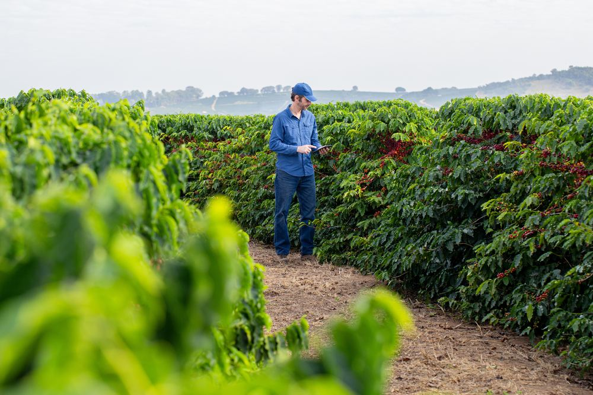

Irrigate exactly when and where crops need it
CropX combines soil data with weather forecasts and crop models to generate precise irrigation recommendations — so you never over-water or under-water again.
See irrigation planning
Farms on CropX irrigation planning saw
3M+acres monitored worldwide on the platform